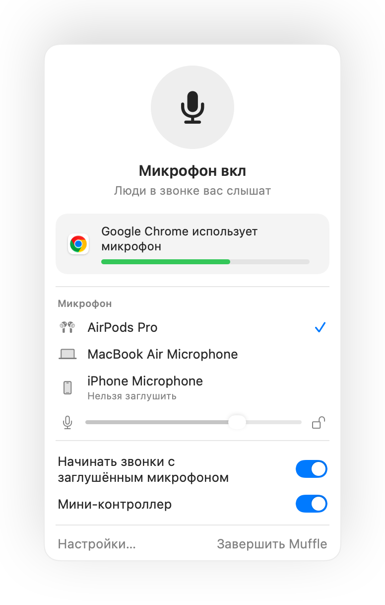

Как заглушить звонок в любой вкладке браузера на Mac
Всё больше видеозвонков проходит прямо в браузере: Google Meet, веб-версия Teams, виртуальные офисы SoWork и Gather, Whereby или Jitsi. У каждого сервиса своя кнопка мьюта и свои горячие клавиши, которые работают только на активной вкладке.
Браузеры на Mac к тому же игнорируют нажатие на ножку AirPods для отключения звука. Muffle перехватывает это нажатие или глобальный хоткей и заглушает микрофон сразу для всех вкладок.
Как заглушить любой звонок в браузере
- 1
Установите Muffle и разрешите доступ к микрофону.
- 2
Откройте страницу видеозвонка в любой вкладке браузера.
- 3
Нажмите ножку AirPods или сочетание клавиш Control-Option-M, чтобы заглушить микрофон из любого приложения или вкладки.
- 4
Следите за значком в строке меню: красный цвет означает, что микрофон отключён.

- Виртуальные офисы держат микрофон включённым часами. Включите плавающий мини-контроллер, чтобы всегда видеть текущий статус.
- Напоминание «Вы заглушены» предупредит вас, если вы начнёте говорить с отключённым микрофоном.
Вопросы и ответы
Почему нажатие AirPods не работает в Chrome?
Chrome не поддерживает системный жест отключения звука на AirPods для веб-страниц. Muffle принимает это нажатие и отключает сам микрофон.
Работает ли это в SoWork и Gather?
Да. Любой сайт, использующий микрофон, перестаёт получать звук, когда Muffle заглушает микрофон.